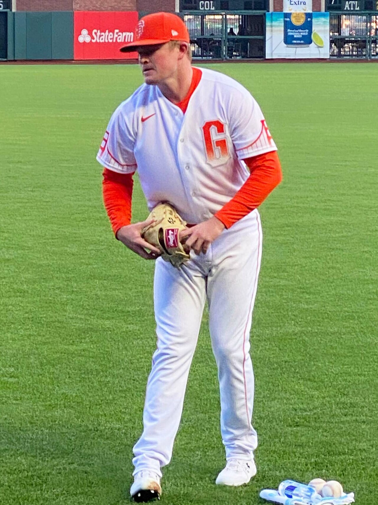

Colorado won 5-2 at Oracle Park on Friday night. Five runs, in the quietest scoring address the Rockies will visit all season, against a Giants pitching staff that has spent the year holding people down. Roughly eighteen hours later, the largest single position on today's card asks that same lineup, in that same ballpark, to score three or fewer.
That tension runs straight through all six plays on this fifteen-game Saturday board. Eleven and a half units are spread across the slate, and not one of those units is a bet on a season-long team number. Every ticket here is a bet that one starting pitcher matters more this afternoon than four and a half months of sample does.
| Play | Line | Odds | Stake | Game |
|---|---|---|---|---|
| Colorado Rockies team total | Under 3.5 | -138 | 3.0 units | COL at SF |
| Brewers at Dodgers, game total | Under 7.5 | -115 | 1.5 units | MIL at LAD |
| Detroit Tigers moneyline | Moneyline | -134 | 1.5 units | CWS at DET |
| New York Yankees moneyline | Moneyline | -166 | 2.0 units | NYY at TOR |
| Texas Rangers moneyline | Moneyline | -141 | 2.0 units | TEX at ATH |
| Boston Red Sox team total | Over 3.5 | -147 | 1.5 units | BOS at PIT |
The card risks 11.5 units to win 8.24. Every play is logged on the BetLegend record at TrustMyRecord, tickets 4265 through 4270, at the exact prices listed above. Friday's seven-play card finished 4-3 for a gain of 1.14 units, so this one walks in with the ledger slightly green and the stakes noticeably larger.
Start with the argument against it, because on the raw season numbers this is the least obvious position on the board. Colorado scores 4.77 runs per game, eighth most in the major leagues, ahead of Minnesota, Houston and Detroit. That is not a typo, and it is not entirely Coors Field either, though Coors is most of it. At home the Rockies score 5.19 a game with a .784 OPS and a .272 average. On the road those numbers fall to 4.38, .706 and .238. Across 63 road games this season they have been held to three runs or fewer 32 times. That is 50.8 percent. At -138 this ticket needs 58.0.
The sample does not get there. Logan Webb has to.

Logan Webb has allowed three earned runs across his last twenty innings and takes a .225 opponent average into the Colorado series.
Webb has given up three earned runs in his last twenty innings of work. On August 3 he threw six shutout innings and struck out eight. On August 9 he went eight and allowed one. The season line reads 3.59 with a 1.08 WHIP, a .225 opponent average and nine home runs surrendered in 133 innings, which in a ballpark that swallows fly balls the way Oracle does is close to the ideal profile for a team total under. Visiting lineups have been held to three or fewer runs in 31 of 60 games at Oracle Park this year, and that count includes every offense that has walked in there, not just the road version of this one.
A quieter piece sits on the other side of the ball. Michael Lorenzen starts for Colorado carrying a 6.83 ERA, a .340 opponent average and eighteen home runs allowed across 112 innings, and he has not completed five innings in any of his last four starts. If San Francisco does to him what that line invites, the Rockies spend the afternoon chasing, and a road team playing from behind gives a bullpen more at-bats than it takes away.
The honest counterpoint is the box score from last night. Five runs, in this park, off this staff, less than a day ago. Team total unders are the most bullpen-dependent tickets in baseball, and Colorado has posted eight, six, five and four runs in four of its last seven road games. Three units is the biggest stake on the card and it is asking a road split that has produced 51 percent to deliver 58.
Braydon Fisher is Toronto's listed starter. His last five outings covered 1.0, 1.0, 1.1, 1.0 and 1.1 innings. He has seven starts and 61 innings on the season with 33 walks against 57 strikeouts and a 3.54 ERA. Toronto is not sending a starter to the mound this afternoon in any conventional sense. It is opening a bullpen game and hoping the arms behind Fisher hold up for eight innings.
The Yankees answer with Cam Schlittler, whose 2026 has become one of the quieter excellent seasons in the league: 2.21 ERA, 0.93 WHIP, 182 strikeouts in 146.2 innings, a .196 opponent average, and eleven strikeouts across seven innings in his most recent start on August 9. The lineup he faces scores 3.91 runs a game, twenty-ninth in the majors, and 3.83 at Rogers Centre.
What argues back is the price and the recent history. At -166 the ticket needs 62.4 percent, which is a real number to clear. Toronto beat the Yankees 3-1 in the opener of this series on Friday and has won three of the last five meetings between the clubs. Bullpen games beat good starters all the time, because the entire design is to deny a lineup a third look at anybody. Schlittler's own log holds a three-inning, four-earned, five-walk start on August 3, so the floor exists even in a season this good.
This is the shakiest play on the card and it deserves to be labeled that way. Texas scores 4.07 runs per game, twenty-sixth in baseball, 4.02 of them on the road, and the club is 28-36 away from home. They lost 8-3 at Sutter Health Park on Friday. The Athletics, meanwhile, score 5.03 a game at their temporary Sacramento home with a .789 OPS there, better than their road OPS by nearly 150 points.
The case is the arms and one buried record. MacKenzie Gore has 149 strikeouts in 134 innings and has allowed four earned runs across 18.1 innings in his last three starts, including a nine-strikeout outing on August 10. J.T. Ginn has pitched well lately but he has walked 53 men in 121.1 innings, and free baserunners are how a bottom-six offense manufactures the two or three runs it needs. And the Athletics, for all that home scoring, are 22-39 at home. A club that hits at its own park and still loses two of every three games there is telling you exactly what its run prevention looks like.
Still, -141 needs 58.5 percent from a team ranked twenty-sixth in scoring, playing on the road, in a park where the ball carries. If one play on this card looks foolish by midnight Eastern, it is most likely this one.
Two of the five highest-scoring offenses in baseball share a field tonight, Milwaukee at 4.86 runs a game and Los Angeles at 4.98, and the play is the under. The reason has a name and a strikeout rate. Jacob Misiorowski carries a 1.76 ERA, a 0.74 WHIP, 204 strikeouts in 133 innings and an opponent batting average of .147. Hitters are batting .147 against him. He has walked thirty men all year.
The park helps in a way that surprises people. The Dodgers score 5.53 runs per game on the road and only 4.43 at Dodger Stadium, and their home games have finished at seven total runs or fewer 29 times in 61 tries. Milwaukee games have landed at seven or fewer in 64 of 123. The first two games of this series went nine total runs on Thursday and four on Friday. The break-even at -115 is 53.5 percent, and once again the raw sample sits just underneath it, which is why the pitcher carries the ticket.
Justin Wrobleski is the counterpoint, and he is a serious one. His last two starts were 4.1 innings and seven earned runs on August 3, then 3.1 innings and three earned on August 9. Ten earned runs in 7.2 innings across two outings. If that version shows up, this under is dead before Misiorowski's night is finished, because a game where one starter exits in the third turns into a bullpen game, and bullpen games in Los Angeles have been the ones that clear this number.
Troy Melton has not allowed an earned run in twenty consecutive innings: seven on July 28, seven on August 4, six on August 9. His season reads 1.46 with a 0.90 WHIP and a .171 opponent average across 80 innings in thirteen starts. Anthony Kay has been perfectly respectable for Chicago at 3.96 and 1.34, but he has issued 43 walks in 116 innings and the separation between the two is not subtle.
The problem is that the White Sox scored nine runs at Comerica Park on Friday and won 9-5, and they are seventh in the majors at 4.82 runs per game, which is not a number most people associate with this franchise. At -134 the ticket needs 57.3 percent. Melton has also never thrown more than seven innings in a start, so the Detroit bullpen gets the last two innings of a one-run game more often than not, and Detroit's own offense sits twelfth at 4.57.
Cleanest arithmetic on the card. Boston has scored four or more runs in 37 of 62 road games this season. That is 59.7 percent. At -147, the ticket needs 59.5. Before a single adjustment for opponent, the season baseline is already on the right side of the price by two tenths of a percentage point.
Jared Jones is the adjustment. His last start, on August 9, lasted three innings and cost eight earned runs. His season line is a 5.03 ERA over 59 innings in thirteen starts, which works out to four and a half innings a night, so Boston reaches the Pittsburgh bullpen in the fifth inning as a matter of routine rather than as an upset. The Red Sox also hit better away from Fenway, 4.58 runs a game on the road against 4.30 at home. Sonny Gray on the other side, 14-3 with a 2.79 ERA, does not affect a team total directly, and because Boston is the visiting club it is guaranteed all nine of its half-innings regardless of how the game ends.
Against it: Boston scored one, three and four runs in three of its last five games, including four at PNC Park on Friday, which is right at the number rather than comfortably past it. PNC has been generous to Pittsburgh's own hitters, who score 5.44 a game there, more than it has been to visitors. And a two-tenths-of-a-percent cushion is not a cushion. Everything beyond it is the Jones adjustment holding up.
An independent model run on the same fifteen games agrees with the card in three places and adds one wrinkle. Its projection puts Colorado at 3.43 runs against that 3.5 team total, Boston at 4.65 against its 3.5, and Texas at 5.84 runs in Sacramento, all three on the same side as the tickets above. Its only standalone qualifying signal today is an Athletics team total under 4.5, which is a different way of expressing the same read on the Sacramento game rather than a disagreement with it. The engine also blocked itself out of unders on Detroit and the Cubs because both offenses sit in the top fifth of the league by rolling thirty-day scoring, which is the kind of guardrail that keeps a model from betting a hot lineup quiet.
Three of the six plays need something close to 58 percent or better simply to break even, and two of those three draw from splits that have produced roughly 51. That is not carelessness. It is a card built on the theory that Webb, Schlittler, Misiorowski and Melton are all sitting in the best form of their seasons at the same moment, and that the prices have not fully caught up to that. If two of those four are merely ordinary today, the card loses money even at three wins and three losses, because the two largest stakes sit on two of the shortest prices.
The specific failure modes are easy to name. A single Colorado three-run inning against the San Francisco bullpen kills the biggest ticket, which is how team total unders usually die. Toronto's bullpen game working exactly as designed kills the second biggest. A third consecutive short start from Wrobleski kills the under in Los Angeles. And the Athletics doing at home what they have done at home all year, which is score, kills the Rangers. The path that pays here is narrower than eleven and a half units makes it sound, and the honest summary is that this is a conviction card rather than a value card.
Sources and checking
- Fifteen-game MLB schedule for August 15, 2026, matchups, probable starters, venues and start times
- MLB Stats API schedule endpoint (sportId 1, date 2026-08-15, probablePitcher hydration), pulled this session
- Team records cited (White Sox 63-58, Tigers 60-62, Yankees 68-54, Blue Jays 60-64, Rockies 49-73, Giants 50-72, Red Sox 65-57, Pirates 60-64, Brewers 75-48, Dodgers 74-49, Rangers 60-63, Athletics 48-74)
- MLB Stats API standings, pulled this session
- All thirty-team run-per-game, OPS and batting average rankings (Rockies 4.77 and eighth, White Sox 4.82 and seventh, Dodgers 4.98, Brewers 4.86, Tigers 4.57 and twelfth, Rangers 4.07 and twenty-sixth, Blue Jays 3.91 and twenty-ninth, Red Sox 4.44)
- MLB Stats API 2026 team hitting endpoint for all thirty clubs, runs divided by games played, table sorted to confirm each ranking, pulled this session
- Home and road hitting splits (Rockies 5.19 home / 4.38 road, .784 / .706 OPS, .272 / .238 average; Dodgers 4.43 home / 5.53 road; Blue Jays 3.83 home; Rangers 4.02 road; Red Sox 4.30 home / 4.58 road; Athletics 5.03 home with a .789 OPS against .644 on the road; Pirates 5.44 at home)
- MLB Stats API team statSplits endpoint (sitCodes h and a, 2026 hitting) for each club named, pulled this session
- Colorado held to three runs or fewer in 32 of 63 road games; Colorado's last seven road games including the 5-2 win at San Francisco on August 14
- MLB Stats API schedule endpoint with final scores for team 115, full 2026 season, road games filtered and run totals counted this session
- Boston four or more runs in 37 of 62 road games; Boston's last five games including 4 runs at Pittsburgh on August 14
- MLB Stats API schedule endpoint with final scores for team 111, full 2026 season, road games filtered and counted this session
- Visiting teams held to three or fewer in 31 of 60 games at Oracle Park; Dodgers home games at seven total runs or fewer 29 of 61; Brewers games at seven or fewer 64 of 123; the 9 and 4 total runs in the first two games of the Milwaukee series
- MLB Stats API schedule endpoint with final scores for teams 137, 119 and 158, full 2026 season, filtered and counted this session
- Athletics 22-39 at home; Rangers 28-36 on the road
- MLB Stats API schedule endpoint with final scores for teams 133 and 140, full 2026 season, home and road results tallied this session
- Logan Webb 2026: 3.59 ERA, 1.08 WHIP, 133.0 innings, 103 strikeouts, 9 home runs allowed, .225 opponent average; last three starts of 6.0 IP 2 ER, 6.0 IP 0 ER 8 K on August 3, 8.0 IP 1 ER on August 9
- MLB Stats API 2026 season pitching split and game log for player 657277, both pulled this session
- Michael Lorenzen 2026: 6.83 ERA, 1.88 WHIP, 112.0 innings, 18 home runs allowed, .340 opponent average; last four starts of 3.2, 4.0, 3.0 and 4.1 innings
- MLB Stats API 2026 season pitching split and game log for player 547179, both pulled this session
- Cam Schlittler 2026: 2.21 ERA, 0.93 WHIP, 146.2 innings, 182 strikeouts, .196 opponent average; 7.0 IP 1 ER 11 K on August 9 and 3.0 IP 4 ER 5 BB on August 3
- MLB Stats API 2026 season pitching split and game log for player 693645, both pulled this session
- Braydon Fisher 2026: 3.54 ERA, 1.23 WHIP, 61.0 innings, 7 starts, 57 strikeouts, 33 walks; last five outings of 1.0, 1.0, 1.1, 1.0 and 1.1 innings
- MLB Stats API 2026 season pitching split and game log for player 680755, both pulled this session
- Jacob Misiorowski 2026: 1.76 ERA, 0.74 WHIP, 133.0 innings, 204 strikeouts, 30 walks, .147 opponent average
- MLB Stats API 2026 season pitching split for player 694819, pulled this session
- Justin Wrobleski 2026: 3.44 ERA, 1.11 WHIP, 120.1 innings; 4.1 IP 7 ER on August 3 and 3.1 IP 3 ER on August 9
- MLB Stats API 2026 season pitching split and game log for player 680736, both pulled this session
- Troy Melton 2026: 1.46 ERA, 0.90 WHIP, 80.0 innings, 13 starts, .171 opponent average; 7.0 IP 0 ER on July 28, 7.0 IP 0 ER on August 4, 6.0 IP 0 ER on August 9
- MLB Stats API 2026 season pitching split and game log for player 675512, both pulled this session
- Anthony Kay 2026: 3.96 ERA, 1.34 WHIP, 116.0 innings, 43 walks
- MLB Stats API 2026 season pitching split for player 641743, pulled this session
- MacKenzie Gore 2026: 4.43 ERA, 134.0 innings, 149 strikeouts; 7.0 IP 3 ER, 6.0 IP 0 ER and 5.1 IP 1 ER 9 K on August 10 across his last three starts
- MLB Stats API 2026 season pitching split and game log for player 669022, both pulled this session
- J.T. Ginn 2026: 3.41 ERA, 1.21 WHIP, 121.1 innings, 53 walks
- MLB Stats API 2026 season pitching split for player 669372, pulled this session
- Sonny Gray 2026: 14-3, 2.79 ERA, 125.2 innings
- MLB Stats API 2026 season pitching split for player 543243, pulled this session
- Jared Jones 2026: 5.03 ERA, 59.0 innings, 13 starts; 3.0 IP 8 ER on August 9
- MLB Stats API 2026 season pitching split and game log for player 683003, both pulled this session
- Chicago 9, Detroit 5 at Comerica Park on August 14; Toronto 3, New York 1 at Rogers Centre on August 14; Athletics 8, Texas 3 at Sutter Health Park on August 14
- MLB Stats API schedule endpoint final scores for teams 116, 147 and 140, pulled this session
- Yankees and Blue Jays 2026 season series results, Toronto winning three of the last five meetings
- MLB Stats API schedule endpoint, head to head games between teams 141 and 147 for 2026, pulled this session
- Friday's card result: 4-3, plus 1.14 units
- Graded this session against final scores, recorded in today's verified fact pack
- Model projections (Colorado 3.43, Boston 4.65, Texas 5.84) and the offense filter that blocked unders on Detroit and the Cubs
- Independent team-total model run on the August 15, 2026 slate this session, recorded in today's fact pack
- Logan Webb photograph
- Existing site asset, previously verified and published on this site; Webb starts today's Colorado at San Francisco game
The six plays, their odds and their stakes are the author's own posted card, logged at TrustMyRecord as tickets 4265 through 4270. They are a record of positions taken, not a price feed, and books may show different numbers at the time you read this.
What is not checked, and cannot be:
- No ticket or money percentage splits were pulled for any game on this board, and none are quoted here.
- No line movement history was pulled. The prices shown are the card's entry prices only.
- Lineups had not posted for the evening games when this was written. Late scratches, bullpen availability and weather all postdate the page.
- Park run-environment claims about Oracle Park rest on the 2026 game-by-game scoring record for San Francisco home games, not on a multi-year park factor calculation.
- Break-even percentages quoted are straight conversions of the listed American prices and do not account for any book's hold.